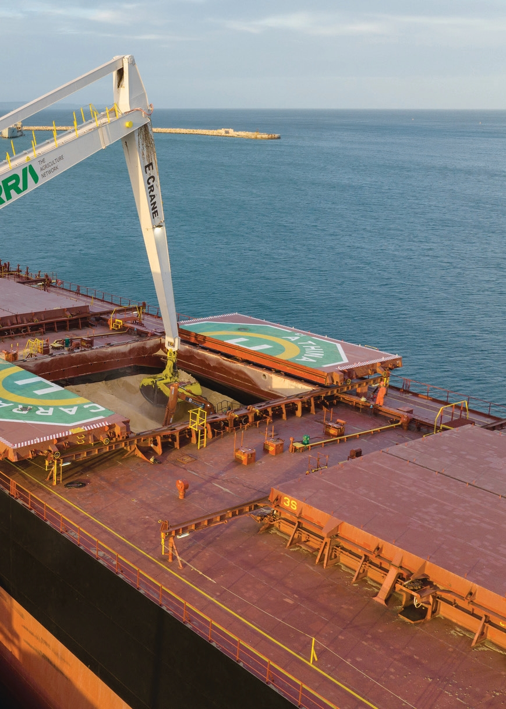

Introdução
A E-Crane Worldwide é uma referência global no fornecimento de soluções turnkey para movimentação de granéis sólidos, reciclagem de metais e operações de dragagem. Fundada em 1990 por engenheiros especializados em equipamentos de grande porte, a empresa construiu uma sólida trajetória baseada em inovação contínua.

Há mais de 35 anos, a E-Crane vem aperfeiçoando o EQUILIBRIUM CRANE — reconhecido internacionalmente como E-Crane® —, o guindaste tipo grab mais eficiente e confiável de sua categoria. Cada unidade contempla engenharia própria completa, fabricação, montagem, testes rigorosos e desenvolvimento integral da documentação técnica.
Com centros de serviços estrategicamente posicionados e uma rede global de distribuidores em constante expansão na Europa, Ásia e Américas, a E-Crane assegura elevada disponibilidade de peças de reposição e respostas técnicas ágeis. Guiada por um compromisso permanente com qualidade, eficiência e inovação, a E-Crane estabelece parcerias duradouras com clientes em todo o mundo.